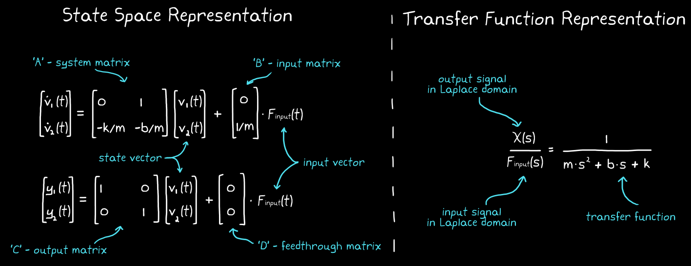

System ID: Alternate mathematical model representations
Problem
A differential equation is great for solving for the response of a system but it doesn't lend itself very well to
- Analysing how a system naturally behaves
- Manipulating a system so it behaves a desired way
Solution
The two most popular alternate representations are:
- Transfer functions
It is a Laplace domain representation of the system and is associated with the era of control techniques labeled classical control theory.
- State space representation
It is a time domain representation, packaged in matrix form, associated with the era labeled modern control theory.

State space vs Transfer function representation
A choice
In modeling a system (i.e. using mathematical operations to map a system's inputs to outputs), an engineer gets to decide:
- What behaviours of the system are to be represented
- Complexity of the representation